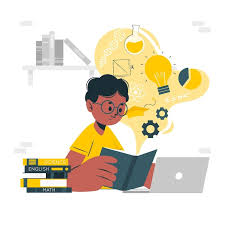

📚🌱 Embrace every opportunity to learn and grow! 🚀 Never stop seeking knowledge and pushing your boundaries. Each experience, whether successful or challenging, contributes to your personal development journey. 🌟 Stay curious, stay motivated, and keep evolving into the best version of yourself. 🌿💡
Timothy Ferriss is a modern-day Renaissance man, known for his relentless pursuit of personal and professional excellence. 🚀 He is an entrepreneur, investor, author, and podcast host, inspiring millions worldwide with his unorthodox approach to life and work. 💼 Ferriss is best known for his groundbreaking book "The 4-Hour Workweek," where he challenges conventional notions of productivity and success. 📚 He advocates for the concept of "lifestyle design," emphasizing the importance of prioritizing time and freedom over traditional career paths. 💡